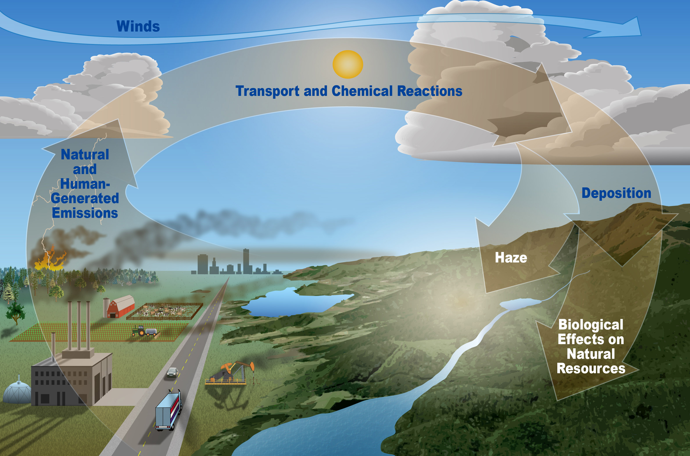

Air pollution occurs when harmful substances such as chemicals, particulates, and biological materials are introduced into the Earth's atmosphere. These pollutants can have severe health and environmental impacts.
Air pollution is one of the leading causes of premature death worldwide and has a significant effect on climate change.
Air pollution is the presence of substances in the atmosphere that are harmful or toxic to living beings and the environment. These substances can be in the form of gases, chemicals, particulate matter, and biological molecules, and they can have a variety of sources, both natural and human-made. Types of Air Pollutants Particulate Matter (PM): Tiny particles or droplets in the air that can be inhaled into the lungs. These include PM10 (particles with a diameter of 10 micrometers or less) and PM2.5 (particles with a diameter of 2.5 micrometers or less). Ground-level Ozone (O₃): Ozone at ground level is harmful to human health and is a key component of smog. Carbon Monoxide (CO): A colorless, odorless gas that is produced by incomplete combustion of carbon-containing fuels. Sulfur Dioxide (SO₂): A toxic gas produced by burning fossil fuels, particularly in power plants. Nitrogen Oxides (NOx): Gases that are produced from burning fuels and contribute to acid rain and smog. Volatile Organic Compounds (VOCs): Organic chemicals that can easily vaporize into the air and contribute to the formation of ground-level ozone. Lead and Other Heavy Metals: Metals such as lead, mercury, and cadmium that can enter the atmosphere from industrial processes or burning of certain materials.